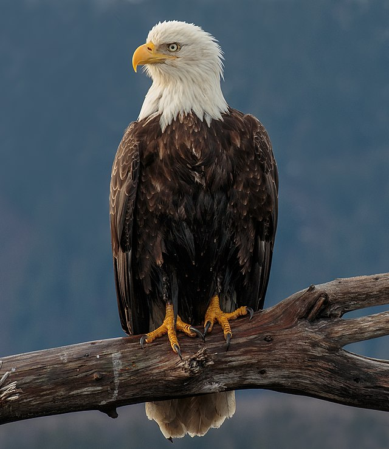

Animales
Aves
Reptiles
Mamiferos
Anfibios
Peces

Águila calva
Alligator de china
Ballena Azul
Tapalcua
Pez Espada
Haliaeetus leucocephalus
Alligator sinensis
Balaenoptera musculus
Dermophis_mexicanus
xiphias_gladius
Loro
Anaconda Verde
Foca
Rana azul
Pez León
Psittacoidea
Eunectes murinus
Leptonychotes weddellii
Dendrobates azureus
pterois_antennata
Cardenal
Varano cocodrilo
Rorcual común
Triton jaspeado
Pez Payaso
Cardinalis cardinalis
Varanus salvadorii
Balaenoptera physalus
triturus marmoratus
Amphiprioninae
Tucan
Tortuga Carey
Mono
Gimnofiones
Pez Escorpión
Ramphastidae
eretmochelys imbricata
Alouatta caraya
Gymnophiona
Scorpaenidae
Gavilan
Vivora de Cascabel
Rinoceronte
Laberintodontes
Pez Guppy
Accipiter nisus
Viperinae
Ceratotherium simum
Labyrinthodontia
Poecilia reticulata
Equipo: SOLIS CANCHE ABRAHAM
Proyecto Interdiciplinario